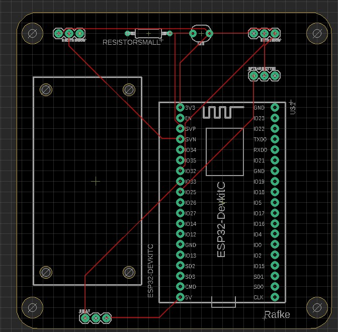

Week 1
De eerste les Technology was voor mij als HRM-student best wel complex. Ik vond het echter allemaal wel ontzettend interessant, aangezien het exact een onderdeel was waar ik meer over wilde leren. Daarnaast zocht ik ook naar een Minor waarbij ik veel over nieuwe onderwerpen zou gaan leren en aan de slag ga met uitdagende opdrachten, zoals dit . Bij de eerste les Technology werd uitgelegd wat er van ons werd verwacht op het einde van de Minor en kregen we allemaal een bakje met technologische onderdelen. We gingen als eerste aan de slag met een printboard, Arduino bord, kabels, een sensor en een RFID kit. We gingen allemaal te werk in Visual Studio Code en begonnen met het kopiëren van codes vanuit Robot Exchange. Dit klonk overigens makkelijker dan dat het daadwerkelijk was, de code wilde soms niet geüpload worden en dan moest je controleren waar het misging.
Gelukkig lukte het uiteindelijk om het ledlampje te laten knipperen en ook laten dimmen. Ook hielp het enorm om de plattegrond van de RFID te gebruiken. Zo wist je precies welke kabel op welk nummer hoort van het printboard. Hieronder een foto van mijn brandende LED-lampje.

Daarna moesten we ervoor zorgen dat het LED-lampje vanzelf ging knipperen en vervagen. Dit lukte ook, zoals in de video hieronder te zien is.
Week 2
Tijdens de 2e les van Technology gingen we verder aan de slag, namelijk met het toevoegen van meerdere componenten aan het breadboard.
Dit zijn de Moisture sensor, RF Transmitter, het Relay, LDR en DHT sensor. Hierbij moesten we natuurlijk ik in Platform IO de codes invoeren en deze op de juiste manier progammeren, zodat dit naar behoren zou werken.
Ik merkte dat meerdere mensen hier dan ook moeite mee hadden, maar gelukkig hielp iedereen elkaar en kreeg ik zo ook mijn componenten aan de praat.
Hieronder foto's die ik tijdens de les heb gemaakt na het toevoegen van een paar van de componenten.
Ook heb ik nog wat filmpjes gemaakt, namelijk van het relay en het pompje en van de DHT sensor die waarden stuurt naar het programma.
Zoals dus te zien is kun je de temperatuur en het vochtgehalte lezen en worden beide aantallen hoger wanneer ik mijn vinger erop leg. Daarnaast moesten we ook bibliotheken toevoegen, van de DHT sensor en de Klik aan Klik uit. Door middel van deze biblotheken konden nog meer functies worden toegevoegd, zoals dus het hierboven lezen van waarden.
Week 3&4
In de 3e en 4e workshop gingen we aan de slag met de Blynk app, dit was enorm interessant. Alle data die de sensoren meten, komt door Blynk terecht op je telefoon.
Op de screenshot hieronder is de data te zien die mijn telefoon weergaf na het verbinden van de app met mijn componenten.

De button dient voor het branden van het lampje en de knop voor het relay zorgt ervoor dat het relay klikt/lampje brandt wanneer deze aan of uit wordt gezet.
Nadat dit gelukt was was aan ons de taak om alles werkend te krijgen en ervoor te zorgen dat alles via de telefoon te bedienen is. De codes combineren van de verschillende componenten was af en toe nogal lastig, gelukkig is dit uiteindelijk ook gelukt.
Week 5
De 5e les was online, net zoals de 6e les. Tijdens deze lessen gingen we aan de slag met het programma Eagle en ook het namaken van ons fysieke PCB in een schematische, digitale versie in Eagle.
Dit was goed te doen, Matthijs legde alles erg goed uit en bleef ook steeds beschikbaar om vragen te stellen. Hieronder is een board view te zien van de elementen waarmee we moesten oefenen.

Hierna moesten we zelf al gaan proberen om ons eigen PCB in elkaar te zetten op he programma, dit lukte ook prima.
Het is me gelukt om deze les mijn PCB nagemaakt te hebben in Eagle en dit hield in dat ik de laatste les het alleen hoefde laten controleren.
Mathijs heeft toen wat componenten wat logischer gerangschikt, zodat de draadjes in het PCB wat soepeler liepen.
Dit was het uiteindelijke resultaat:
